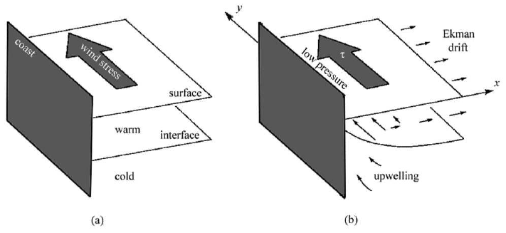

class: center, middle <br/><br/> .title[Dinámica de Fluidos Geofísicos] .subtitle[Viento termal y surgencia costera] <br/><br/> .author[Semestre 2024-I] .institution[Facultad de Ciencias] <br/> .date[23 de noviembre de 2023] <br/><br/> <img style="width:100%" src="./figures/green_waves.png"> <!-- .note[Created with [{Liminal}](https://github.com/jonathanlilly/liminal) using [{Remark.js}](http://remarkjs.com/) + [{Markdown}](https://github.com/adam-p/markdown-here/wiki/Markdown-Cheatsheet) + [{KaTeX}](https://katex.org)] --> --- class: left ## Viento termal .center[] .center[.caption[Figura 15-1 de Cushman-Roisin y Beckers (2011).]] Vamos a las notas... --- class: left ## Demostración en el laboratorio <iframe width="560" height="315" src="https://www.youtube.com/embed/KfJvymo_BYE?si=da-Y_J3A1_cefvNh" title="YouTube video player" frameborder="0" allow="accelerometer; autoplay; clipboard-write; encrypted-media; gyroscope; picture-in-picture; web-share" allowfullscreen></iframe> .caption[Thermal wind demonstration, Met Office UK] --- class: left ## Surgencia costera .center[] .center[.caption[Imagen: American Meteorological Soc. tomada de [Ocean Motion and surface currents, NASA](http://oceanmotion.org/html/background/upwelling-and-downwelling.htm)]] --- class: left ## Desarrollo de la surgencia costera </br></br></br> .center[] .center[.caption[Imagen: Fig 15.5 Cushman-Roisin y Beckers (2011)]] --- class: left ## Algunos tipos de surgencia Costera, ecuatorial y al borde del hielo </br></br></br> .center[] .center[.caption[Imagen: Kämpf y Chapman (2016) Upwelling Systems of the World]] --- class: left ## Regiones importantes de surgencia costera en el mundo </br></br></br> .center[] .center[.caption[Imagen: Kämpf y Chapman (2016) Upwelling Systems of the World]] --- class: left ## Un ejemplo: Corriente de California .left-column[ Los patrones espaciales son mucho más complicados debido a variaciones espaciales y temporales del viento, la línea de costa, la forma del fondo, procesos dinámicos de segundo orden, etc.] .right-column[ .center[] .center[.caption[Imagen: Fig 15.9 de Cushman-Roisin y Beckers (2011)]]] --- class: left ## Un modelo simple de surgencia costera (Ver notas) * Gravedad reducida en plano $f$ * Capa superior móvil (incluye toda la capa de Ekman) * Capa inferior no se mueve y es infinita En las notas encontramos que la surgencia está atrapada a la costa en una distancia característica dada por: $$R_\omega = \sqrt{\frac{g'H}{f^2-\omega^2}}$$ --- class: left ## Referencias Cushman-Roisin y Beckers, capítulo 15. Kämpf, J., & Chapman, P. (2016). Upwelling systems of the world. Springer International Publishing Suiza. Disponible via [BiDiUNAM](https://bidi.unam.mx/) </br></br></br></br></br></br></br></br> .note[Notas creadas con [{Liminal}](https://github.com/jonathanlilly/liminal) usando [{Remark.js}](http://remarkjs.com/) + [{Markdown}](https://github.com/adam-p/markdown-here/wiki/Markdown-Cheatsheet) + [{KaTeX}](https://katex.org)]